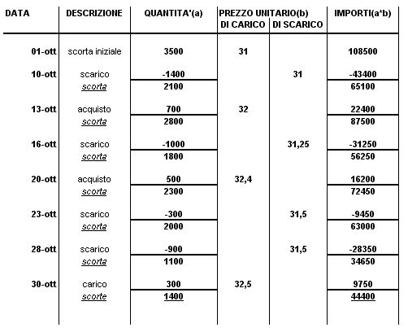
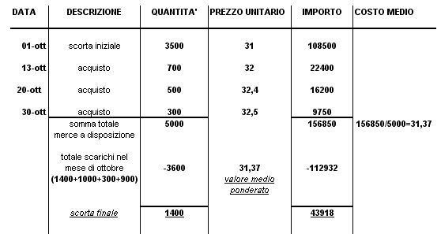

Torna alla pagina di Economia ed Organizzazione Aziendale
:: Economia ed Organizzazione Aziendale ::
Lezione 21/05/2008
Questo esercizio è la continuazione dell'esercizio della lezione scorsa però seguendo i Principi Contabili Internazionali.
Ammortamento: Aliquota Annuale 20% * 3 Mesi di Utilizzo(rispetto all'anno i 3 mesi sono 1/4) = 20% * 1/4
Valore del Bene: 45000
Aliquota: 1/4Nota1 * 20% = 5%(Aliquota riferita ai 3 mesi)
Nota1: Prendo 1/4 perché il contratto è stato stipulato il 1/10/X1
Ammortamento: 45000 * 0.05 = 2250
Altro Metodo di risoluzione: (45000 * 20)/100 * (3/12) = (45000 * 20 * 3) / 1200 = 2250
Canoni Leasing

i BENI IN RIMANENZA si possono valutare in base:
Secondo i principi contabili(per prudenza) e secondo le norme civilistiche dei due criteri(costo;prezzo di mercato) si deve scegliere IL MINORE. Si fa così perché altrimenti avrei:
Si possono applicare diversi metodi di valutazione delle scorte:
La PONDERAZIONE si calcola con riferimento a:
- i movimenti di merce
- periodo temporale
La ditta Rossi SPA il 1°Ottobre ha in magazzino 3500 unità valorizzate a 31.
RICHIESTA:
determinare il valore della merce in magazzino con un costo medio ponderato.
SOLUZIONE:
Con questo metodo seguo le movimentazioni una per una:
MEDIE PER MOVIMENTO

NOTA: VALORE DI SCARICO = valore scorta esistente in magazzino / quantità(n° scorte).
quindi:
La scorta alla fine di Ottobre è 1400 unità per un valore di 44400.
Il costo medio ponderato posso trovarlo anche con le sommatorie:
((3500 * 31) - (1400 * 31)) / (3500-1400) = 31
Il 2° approccio nel calcolo del costo medio ponderato non segue le movimentazioni una per una, ma prende in considerazione tutto il periodo.
MEDIA DI PERIODO

La media ponderata DI PERIODO si ottiene sommando:
e togliendo a questo:
La media ponderata per movimento assegna alle scorte di magazzino un valore superiore a quello ottenuto con la media ponderata di periodo nell'esercizio fatto.
{kind=link}